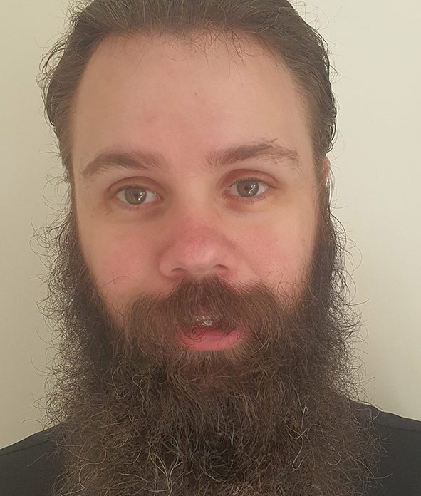

Brent Kimm
- Student ID: s3873880
- Contact Me
- Ideal Job: Applications Developer
Learn more
About Me
I am a 30-year-old male from Melbourne, Australia. I
completed VCE in 2008 and have since worked in various
roles within the Railway and Civil industries. When I
was 5 years old, I received a NES for Christmas with the
Super Mario Bros. 1 and 2. From there on, I played a
wide array of games before eventually deciding to build
my own computer many years later. This is where my
interest in the field of Information Technology began...
I am extremely passionate about Football and Basketball,
being a major Saints and Celtics fan respectively
outside of gaming and computers. I also love fishing,
camping, and escaping the hustle and bustle of the city
to explore our beautiful country.
Career Plans
Outcome
Study general IT basics right now while looking to
develop my coding skills to an extensive level to
achieve my ideal career as an Applications Developer
Short Term (0-1 year)
-
Attain at least a pass mark (50%+) minimum in
Introduction to Information Technology
-
Attain at least a pass mark (50%+) minimum in
Introduction to Programming
-
Gain as much basic knowledge as possible in a few
significant forms of coding; such as Python, Java,
HTML, and C++
-
Learn more about the minimum skills and requirements
it takes to be in Applications development
Mid Term (1-5 years)
-
Use spare time to assist friends and family in
troubleshooting different IT and programming related
issues while learning other problem-solving techniques
myself.
-
Continue to progress my programming skills to an
extensive level
-
Develop small applications for personal use to assist
with everyday activities, such as my own Item-Finder
Application as per my Assignment 1 project.
-
Complete a Batchelor of Computer Science at RMIT while
still working a full-time occupation
Long Term (> 5 years)
-
Once completed a Batchelor of Computer Science, quit
my current full-time employment, and search for a low
paid traineeship role in the industry.
-
Use my spare time to study for a Master’s degree in
Computer Science
-
Apply for a career in a senior position at an
Applications Development company
-
Start my own small-business in general IT
troubleshooting, maintenance, and repairs.
Obstacles
-
Having a family of dependents, as well as multiple
mortgages means I require a consistent weekly wage,
therefore not having the ability to study full time,
thus drawing out the career ambitions over a more
extended period.
-
Not having a big background in programming, a lot of
the basics are still very new to me

Leonard McDonald
- Student ID: s3879586
- Contact Me
- Ideal Job: Gameplay Engineer
Learn more
About Me
I am a 28 Male Australian. When I was in primary
school, I had no idea why my brothers friend could play
NES roms on his computer while they wouldn’t work on
our macintosh, from this starting point my interest in
IT and all its workings would manifest. Classmates in
my country side high-school were impressed by the small
scripts i could write, and as I moved forward my
interest developed my skills in problem solving, video
editing, and just enough of everything else to play
around with at beginner level. I’d like to work on game
mechanics, design and video editing in my spare time,
and I believe that the skills I learn from working with
our group ‘Meme Team’ will benefit me both in the
course and my hobbies
Career Plans
Outcome
Have a developed experienced IT portfolio covering
multiple fields of gameplay engineering and up to date
certifications, using this malleable skillset to start
developing my career in the game development industry
while living outside of Australia by 2025.
Short Term (0-1 year)
-
Continue studying Bachelor of Information Technologies
at RMIT choosing electives centralising around
programming, software mechanics, and project
management.
-
Take part in ‘game jams’ such as Ludam Dare to better
understand time management and my initial strengths in
dame development. (https://ldjam.com/)
-
Study 3D modelling and programming software from
professional tutorials from lynda.com, skillshare,
udemy (to name a few) to develop my interest and
solidify my ideal career plan.
-
Position myself to develop team building and
leadership skills to overcome my irresolute
personality weakness and build the confidence needed
for project management.
Mid Term (1-5 years)
-
Change or continue my learning from Bachelor of IT to
Bachelor of Computer Science
-
Learn C/C++ programming language
-
Apply for/work with a team that will position me to
further develop a gameplay engineer specific skill in
either Collision detection, network protocols,
multiplatform development, physics engines, AI, or
performance & optimization.
-
Learn the language of my destination country (TBD)
Long Term (>5 years)
-
Study relevant IT Certifications from 2025 onwards
-
Continue my work with a company or team moving into
the role of ‘expert' gameplay engineer or project
management, else apply for this job role while
continuing to develop different skills in my current
career position.
-
Apply for Australian grants to be used for educational
IT projects, using the money to hire a team I will
direct outside of work hours to continue developing my
Australian based job expertise while abroad.
-
Network inside my career industry and within
Australia’s grant system.
Obstacles
-
Low self-efficacy
-
Discrimination towards myself as a foreigner
-
Career pathway jobs need to be chosen efficiently for
skill development
-
Experience
-
Learning capacity
Lochlann Keenan Kelli
- Student ID: s23872026
- Contact Me
- Ideal Job: Cybersecurity Consultant
Learn more
About Me
My nickname is Lo and I live in Queensland with my
fiancee. I spend alot of my free time gaming, and
chilling out. I used to have a dream of setting up an
American styled 50's diner. But this dream got crushed
when I realised I do not like working in Hospitality. So
I decided to change my dream to something involving my
hobbies; IT. I have been mucking around with computers
ever since I was a very young child, I was always
getting new technology, breaking it, troubleshooting
what I did, and then fixing it all up again.
Career Plans
Outcome
My dream career has changed since Assignment 1 and
Assignment 2. I aim to get a career in the cybersecurity
field as a Cybersecurity Consultant. I got this
motivation after completing the Cybersecurity research
task for Assignment 2. While conducting the research, I
discovered the importance of keeping yourself safe
online and in the real world. I would love to assess and
advise people on how they can keep their personal
information and data safe.
Short Term Goal (0 – 1 year)
Within the next year, I would like to continue studying
Bachelor of Information Technology through RMIT. While
attending, I would like to make friends in the IT field
and get in contact with people who are already in the
field, preferably Cybersecurity Consultants, but also
people who would like to get into the area as well.
Mid Term Goal (1 – 5 years)
Within the next five years, I would like to complete my
Bachelor of Information Technology and start applying to
IT jobs in my area (South-East Queensland). I hope to
gain some experience within the Cybersecurity area, to
do this I will enquire with companies, friends, and
family to see if anyone is willing to give me work
experience or to let me shadow a team to see what goes
on.
Long Term Goal ( > 5 years)
My long term goal is to become a Consultant, so I can
help companies and individuals to become more cyber
safe. I would also like to start my own small company of
consultants, and in the future, expand into more fields.
Obstacles
I am not a hugely motivated person; I am pretty good at
procrastinating; however, I aim to get over this
obstacle so I can motivate myself to get into my ideal
job. Currently, in the Sunshine Coast, there are not
many options when it comes to a career in IT, this means
that I am going to have to branch out and leave Sunshine
Coast.

Micheal Heaney
- Student ID: s3875107
- Contact Me
- Ideal Job: Front-End Web Developer
Learn more
About Me
Hello there. I'll start with a little about myself I have
a background in warehousing and I’m moving to IT for a
career change, I am half German and half Australian, I
only speak English. My education to date is finishing
year 12 in 2005 I studied IT and Multimedia throughout
my college life but finishing year 12 I pursued a career
in warehousing and driving forklifts. Hobbies I enjoy
are four-wheel driving and off-roading with camping
overnight in the bush near a river. I also play the
guitar and did so in a band for roughly 4 years touring
the East Coast of Australia. Other pass times I enjoy
playing video games with my 3 children.
Career Plans
Outcome
Study a Batchelor’s of Information Technology through
RMIT University to achieve my ideal career as a Senior
Web Developer
Short Term (0-1 year)
-
Pass Introduction to Information Technology through
RMIT
-
Pass Introduction to Programming through RMIT
-
Learn the fundamentals of JavaScript, HTML and CSS
programming languages
-
Begin a Batchelor’s of Information Technology degree
Mid Term (1-5 years)
-
Complete Batchelor’s of Information Technology
-
Get an internship as a Junior Web Developer
-
Begin development on a portfolio with all previous
works on GitHub
Long Term (> 5 years)
-
Gain enough experience to advance to a Senior Web
Developer
-
Be employed as a Front-End Web Developer
-
Learn Frameworks such as ReactJS
Obstacles
-
Issues learning certain things related to programming
-
Not being able to learn different things as fast as I desire

Steven Holman
- Student ID: s3514124
- Contact Me
- Ideal Job: Software Developer
Learn more
About Me
I am 32 years old male currently living in Victoria,
Australia and am working with Meme Team. Computers has
been a passion of mine since I was a child, from growing
up watching my brother build a 486 and playing strategy
games on it such as Civilization and UFO Enemy Unknown.
Programming has since become a passion of mine of which
I wish to expand into a future career. My younger self
use to have many hobbies including playing the guatar,
music and skateboard but I currently spend most of my
current time focusing on computers.
Career Plans
Outcome
Gain experience in IT with expanding my knowledge of
programming to achieve my ideal job as a software
developer by 2024.
Short Term (0-1 year)
-
Continue studying Bachelor of Information Technologies
at RMIT while keeping a high average in marks
-
Learn more about common programming concepts
-
Read more books about programming such as ‘Clean Code’
by Robert Cecil Martin
-
Learn more about using Unity and the game development
process
Mid Term (1-5 years)
-
Complete Bachelor of Information Technologies at RMIT
in 2023
-
Apply for jobs in the Melbourne area as a Junior
Software Developer
-
Research more advanced programming concepts
-
Learn C++ programming language
-
Network out to people using services such as LinkedIn
-
Learn using Unreal Engine
Long Term (> 5 years)
-
Continue research of programming concepts, there is
always knowledge to gain
-
Apply for jobs in a more senior position
-
Continue to network with people in the IT and
programming fields
Obstacles
-
Not knowing many people in the field
-
Confidence
-
Health issues
-
Experience

Thomas Lewis
- Student ID: s3879008
- Contact Me
- Ideal Job: Metagames System Programmer
Learn more
About Me
I am a male Australian, 19-year-old high school graduate
studing at RMIT, I have been gaming as long as I
remember with a keen love for Fighters and FPS, That
developed into a love for computers and furthermore
programing for entertainment, hence i am a member of the
Meme team whom's focus is security & entertainment.
Career Plans
Outcome
Gain experience in IT by expanding my knowledge of
programming to achieve my ideal job as a Metagames
System Programmer by 2025.
Short Term (0-1 year)
-
Continue studying Bachelor of Information Technologies
at RMIT while keeping a moderate to high average in
marks.
-
Learn more about Gaming specific programming concepts.
-
Endeavour towards concepts correlated to Specific game
titles such as gearbox and respawn entertainment
respectively.
-
Learn more about using Unity and the game development
process for direct insight into more complex system
analysis.
Mid Term (1-5 years)
-
Complete Bachelor of Information Technologies at RMIT
in 2023.
-
Apply for jobs in the Melbourne area as a Junior
Systems quality assurance.
-
Research more relevant to my field programming
concepts.
-
Learn C++, JavaScript programming language for the
past and present of development skillsets and
transferable concepts.
-
Network out to people using a mix of social platforms
to find people of similar interest or opportunity.
-
Learn using the development process to draw
comparisons and formulate practical solutions to
metagames systems complications through analysis.
Long Term (> 5 years)
-
Continue research of game-specific program concepts,
to maintain relevant knowledge to my role as an active
tester of game quality
-
Apply for jobs in a more senior position focusing on
security of my job and enjoyment relative too
expectation
-
Continue to network with people in the gaming fields
to maintain modern, relevant game mechanics and what's
the hot gameplay that users will seek
Obstacles
-
Not knowing any people in the field (beyond my
classmates and teachers)
-
Communication (need to maintain a higher standard of
formality)
-
Health complications (epilepsy makes prolonged screen
usage difficult)
-
Experience (relative to modern issues which has
minimal documentation)
-
Dyslexia (directly hinders my time efficiency from an
information input sense)